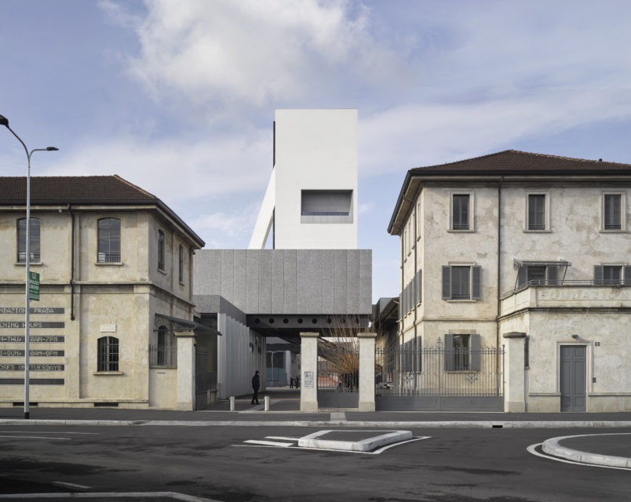
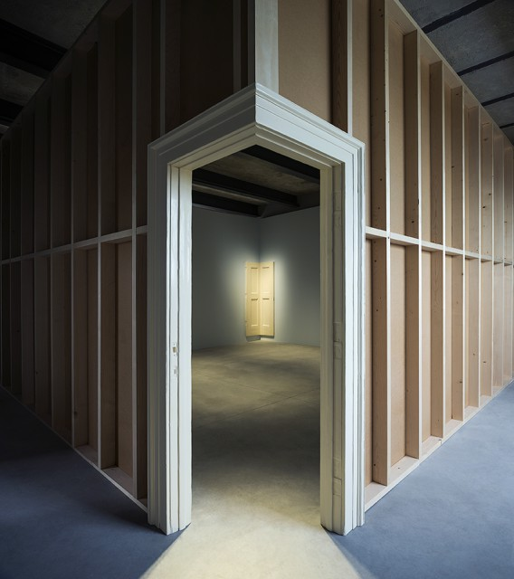
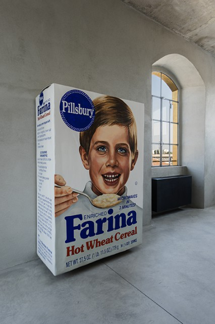
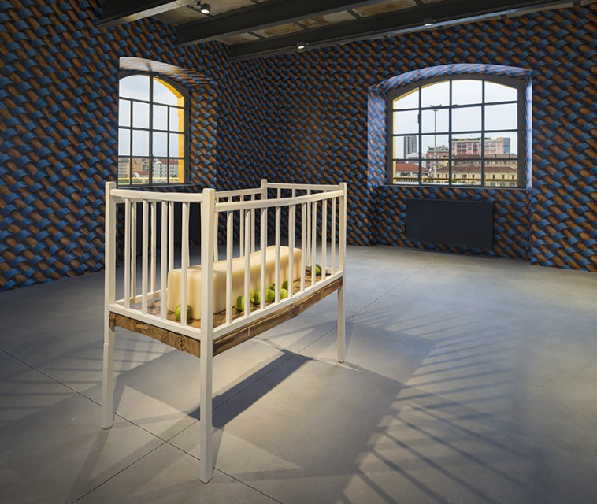
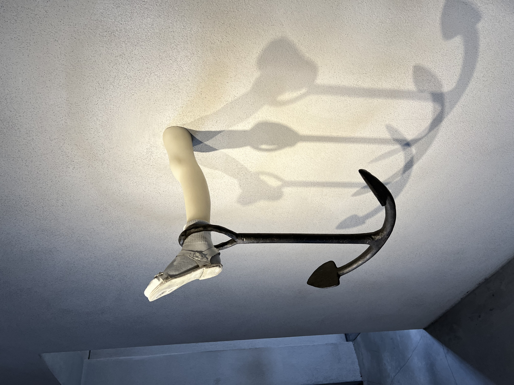
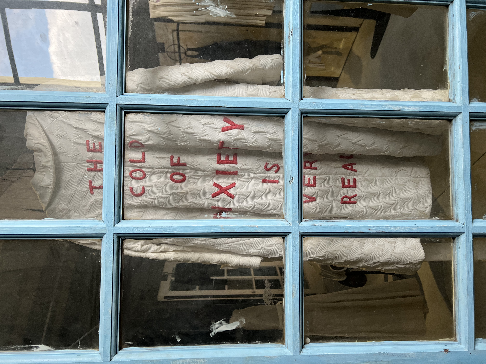
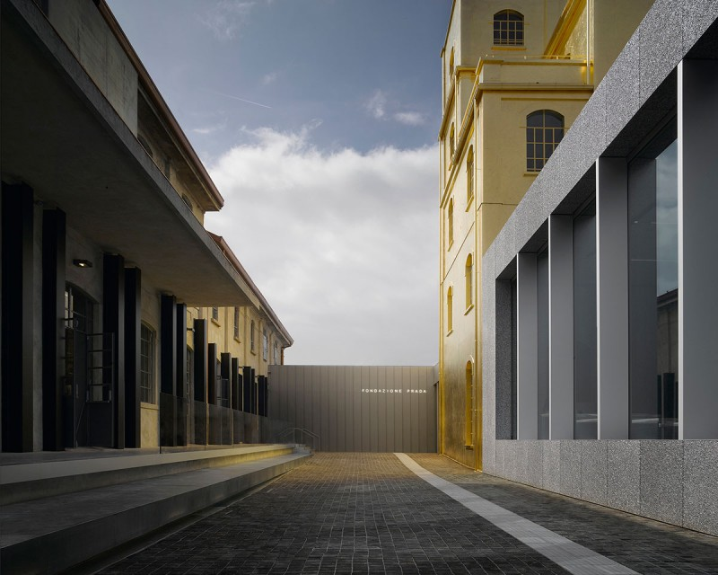
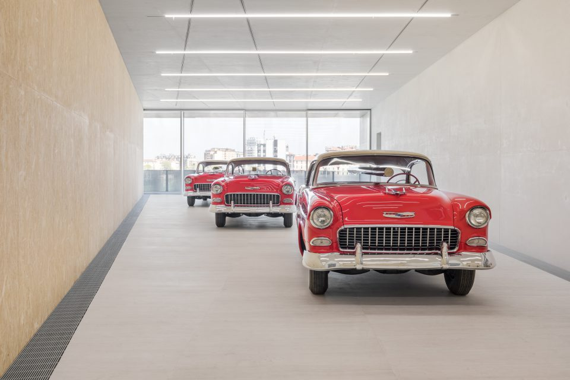
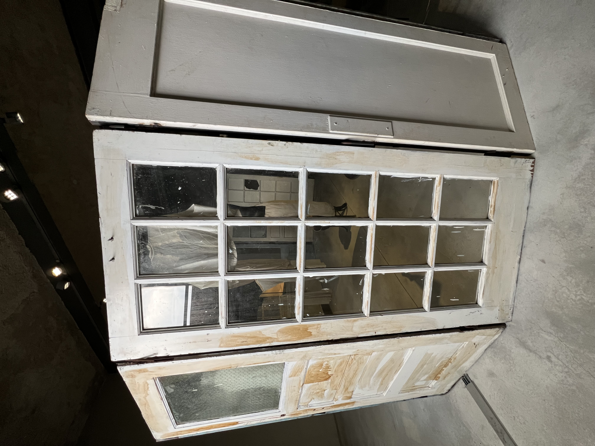
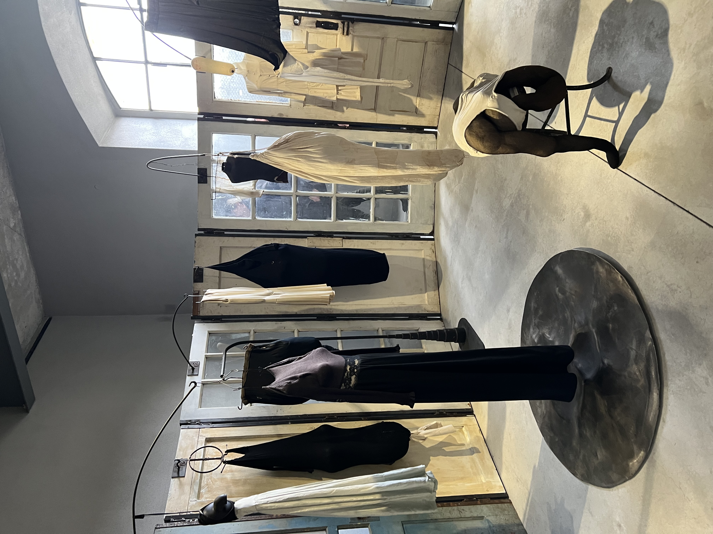

OMA, the architecture firm led by Rem Koolhaas, transformed a distillery from the 1910s into a campus of buildings—three of them new—measuring 205,000 square feet in the south of Milan. My visit in March of 2026, from Chicago to Fondazione Prada Milan, was a visually stunning experience that has turned momentous.

One of the buildings at Fondazione Prada Milan is named “The Haunted House,” where a labyrinthian permanent installation by American artist Robert Gober (b. 1954) is exhibited, along with two works by French-American artist Louise Bourgeois (1911–2010). Gober’s work deals with various experiences such as childhood memories, trauma, religion, and nature. His sculptures include maimed legs, sinks, drains, house paint, butter, cheese, and hair, installed in a haunting, unique manner in response to the architecture of the specific site.

Gober’s installation throughout “The Haunted House” considers the urban environment seen from large windows, yet remains personal in each room. Viewers encounter “Untitled (1993–1994),” an oversized “Farina” box, alongside “Original Model for Top Floor of the Haunted House (2014).” On a different floor, “Corner Door and Doorframe (2014–2015)” presents common objects that viewers understand, yet Gober achieves the feeling of uneasiness that is connected to the entire quiet installation.



At “The Haunted House,” Gober’s installation complements Louise Bourgeois’s two works. “Cell (Clothes) (1996)” shows a rounded set of doors and gates enclosing sculptures of bodies with personal objects that belonged to Bourgeois. The second work, “Single III (1996),” is a fabric sculpture stretched out on the floor.



At Fondazione Prada Milan there is a building named the Torre (Italian for tower) showing “Atlas,” a permanent exhibition project presenting contemporary art on multiple floors. Artists include Italian Carla Accardi (1924–2014), American Jeff Koons (b. 1955), American Walter De Maria (1935–2013), Polish Goshka Macuga (b. 1967), American Betye Saar (b. 1926), American John Baldessari (1931–2020), Belgian Carsten Höller (b. 1961), Swedish-American Claes Oldenburg (1929–2022), and American Alex Da Corte (b. 1980).

The “Atlas” exhibition includes an unforgettable installation by De Maria entitled “Bel Air Trilogy.” Created in the years 2000–2011, the work features three separate, twelve-foot-long stainless steel rods that De Maria placed in three restored 1955 Chevrolet Bel Air cars, painted in red and beige. He then speared the front windshields of the cars with the rods, which extended inside and continued through the rear windows. Each rod was geometrically distinct: one a square, the second a circle, the third a triangle—De Maria’s characteristic trilogy of forms.



For further information about Fondazione Prada, visit fondazioneprada.org.